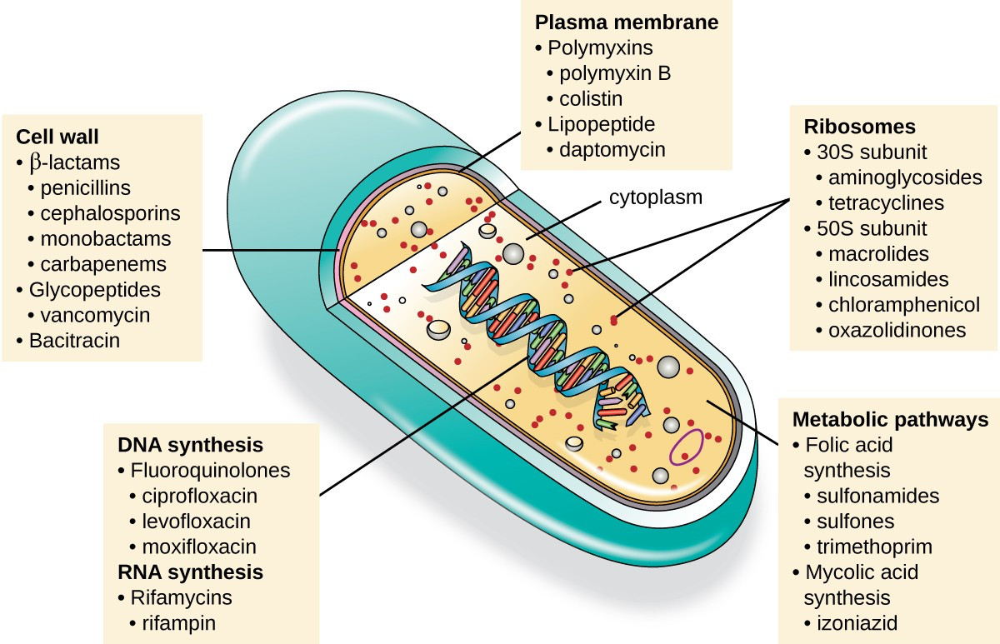
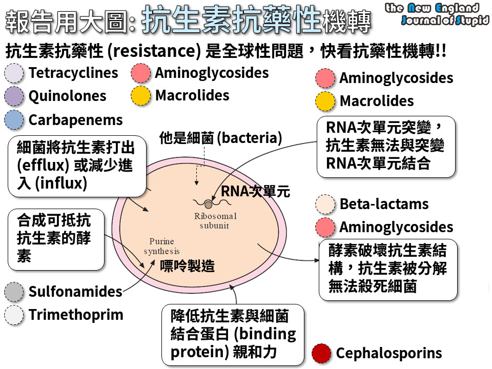
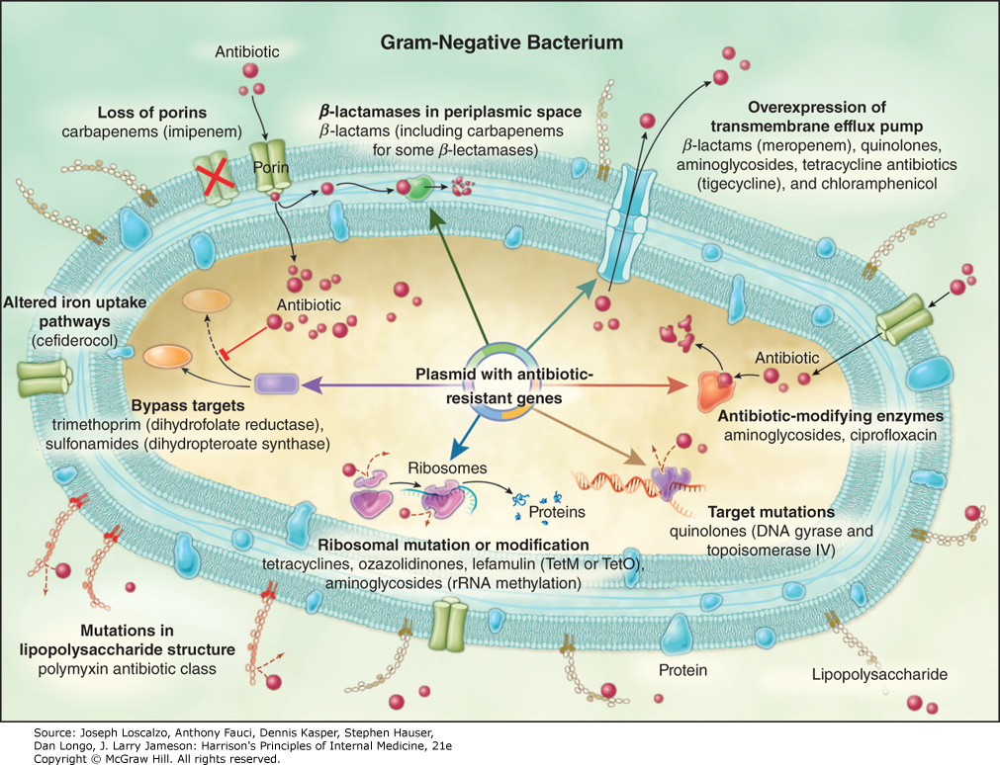

Antibiotics
作用機制

| ANTIBACTERIAL AGENT(S) | MAJOR TARGET | MECHANISM(S) OF ACTION | MECHANISM(S) OF RESISTANCE |
|---|---|---|---|
| β-Lactams (penicillins, cephalosporins, monobactams, carbapenems) | Cell-wall synthesis | Bind cell-wall cross-linking enzymes (PBPs, transpeptidases) | 1. Drug inactivation by β-lactamases 2. Altered PBP targets 3. Reduced diffusion through porin channels 4. Altered iron uptake proteins (cefiderocol) |
| Glycopeptides and lipoglycopeptides (vancomycin, teicoplanin, telavancin, dalbavancin, oritavancin) | Cell-wall synthesis | Block cell wall glycosyltransferases by binding D-Ala-D-Ala stem-peptide terminus Teicoplanin, telavancin, dalbavancin, and oritavancin: affect membrane function |
1. Altered D-Ala-D-Ala target (D-Ala-D-Lac) 2. Increased D-Ala-D-Ala target binding at sites distant from cell wall synthesis enzymes |
| Bacitracin | Cell-wall synthesis | Blocks lipid carrier of cell wall precursors | Active drug efflux |
| Fosfomycin | Cell-wall synthesis | Blocks linkage of stem peptide to NAG by enoyltransferase | 1. Target enzyme overexpression 2. Drug-modifying enzymes |
| Aminoglycosides (gentamicin, tobramycin, amikacin, plazomicin) | Protein synthesis | Bind 30S ribosomal subunit Block translocation of peptide chain Cause misreading of mRNA |
1. Drug-modifying enzymes 2. Methylation at ribosome binding site 3. Decreased permeation to target due to active efflux |
| Tetracyclines (tetracycline, doxycycline, minocycline) | Protein synthesis | Bind 30S ribosomal subunit Inhibit peptide elongation |
1. Active drug efflux 2. Ribosomal protection proteins |
| Tigecycline, eravacyclin, omadacycline | Protein synthesis | Same as tetracyclines | Active drug efflux (pumps different from those affecting tetracyclines) |
| Macrolides (erythromycin, clarithromycin, azithromycin) and the ketolide telithromycin | Protein synthesis | Bind 50S ribosomal subunit Block peptide chain exit |
1. Methylation at ribosome binding site 2. Active drug efflux |
| Lincosamides (clindamycin) | Protein synthesis | Bind 50S ribosomal subunit Block peptide bond formation |
Methylation at ribosome binding site |
| Streptogramins (quinupristin, dalfopristin) | Protein synthesis | Same as macrolides | 1. Same as macrolides 2. Drug-modifying enzymes |
| Chloramphenicol | Protein synthesis | Binds 50S ribosomal subunit Blocks aminoacyl tRNA positioning |
Drug-modifying enzymes |
| Oxazolidinones (linezolid, tedizolid) | Protein synthesis | Bind 50S ribosomal subunit Inhibit initiation of peptide synthesis |
1. Altered rRNA binding site 2. Methylation of ribosome binding site |
| Pleuromutilins (lefamulin) | Protein synthesis | Bind 50S ribosomal subunit Blocks peptidyl transferase center |
1. Altered L3 and L4 protein binding site 2. Methylation of ribosome binding site |
| Mupirocin | Protein synthesis | Blocks isoleucyl tRNA synthetase | 1. Acquired resistant tRNA synthetase (drug bypass) 2. Altered native tRNA synthetase target |
| Sulfonamides (sulfadiazine, sulfisoxazole, and sulfamethoxazole) | Folate synthesis | Inhibit dihydropteroate synthetase | Acquired resistant dihydropteroate synthetase (drug bypass) |
| Trimethoprim | Folate synthesis | Inhibits dihydrofolate reductase | Acquired resistant dihydrofolate reductase (drug bypass) |
| Quinolones (norfloxacin, ciprofloxacin, ofloxacin, levofloxacin, moxifloxacin, gemifloxacin, delafloxacin) | DNA synthesis | Inhibit DNA gyrase and DNA topoisomerase IV Enzyme–DNA–drug complex: blocks DNA replication apparatus |
1. Altered target(s) 2. Active efflux 3. Protection of target from drug 4. Drug-modifying enzyme (ciprofloxacin) |
| Rifamycins (rifampin, rifabutin, rifapentine) | RNA synthesis | Inhibit RNA polymerase | Altered target |
| Nitrofurantoin | Nucleic acid synthesis | Reduces reactive drug derivatives that damage DNA | Altered drug-activating enzymes |
| Metronidazole | Nucleic acid synthesis | Reduces reactive drug derivatives that damage DNA | 1. Altered drug-activating enzyme 2. Acquired detoxifying enzymes 3. Active efflux |
| Polymyxins (polymyxin B and polymyxin E [colistin]) | Cell membrane | Bind LPS and disrupt both outer and cytoplasmic membranes | Altered cell-membrane charge with reduced drug binding |
| Daptomycin | Cell membrane | Produces membrane channel and membrane leakage | Altered cell-membrane charge with reduced drug binding |
抗藥性機轉


藥物動力學
- 藥物動力學：描述藥物在體內的分布情況
- 藥效動力學：描述藥物作用於病原體的決定因素，並與藥物動力學因素相關
濃度依賴型抗生素
這類抗生素多為抑制細菌蛋白質或核酸合成的抗生素，如aminoglycosides、fluoroquinolones，因其殺菌作用與血中濃度呈正比，為達最大之殺菌作用，建議抗生素之Cmax須高於MIC 4倍以上，且因其有抗生素後效應 (Post-antibiotic effect,PAE) 的特性，即便血中藥物濃度在給藥間隔期間內低於MIC，仍可維持一定的抗菌作用。因此採高劑量、延長給藥間隔的方式投予是比較理想的方式，once-daily
aminoglycoside的給藥模式即以此理念所發展。
時間依賴型抗生素
這類抗生素多為beta-lactams類，如penicillin、cephalosporins。對penicillin和cephalosporins而言，血中藥物濃度>MIC的時間越長越能滲透體內組織，建議治療期間的血中濃度有50%以上的時間高於MIC，以達療效最大化、抗生素耐藥性最小化的目標。此類藥品以連續輸注或延長輸注時間的方式給藥，除了可穩定抗生素血中濃
度的變化、不增加重症患者AKI的發生率外，對整體的醫療照護支出費用也可顯著降低。
曲線下面積/最低抑菌濃度相關
如vancomycin，建議血中藥物濃度之曲線下面積 (AUC) 與MIC比值達到400-600
mg × h/L的目標（假設MIC為1），可確保抗生素療效與安全性。
Penetration/Tissue concentration
- 過BBB: penicillin, ampicillin, oxacillin, 3rd-4th cephalosporins, moxifloxacin, vancomycin, chloramphenicol, rifampin, imipenem, meropenem, trimethoprim-sulfamethoxazole
- Prostatitis/epididymo-orchitis: ceftriaxone, doxycycline, fluoroquinolones, trimethoprim-sulfamethoxazole
- Endophthalmitis: 3rd cepha, vancomycin
本院有的抗生素
Cephalosporins
第一代：Cefazolin, cephalexin (PO)
第二代：Cefuroxime (IV, PO)
第三代：Ceftriaxone, ceftazidime, cefoperazone/sulbactam, ceftazidime/avibactam, cefixime (PO)
第四代：Cefepime
第五代：Ceftaroline
Penicillins
Penicillin G, penicillin benzathine (IM)
Oxacillin, dicloxacillin (PO)
Ampicillin, ampicillin/sulbactam
Amoxicillin, amoxicillin/clavulanic acid (PO)
Piperacillin, piperacillin/tazobactam
Carbapenems
Ertapenem, imipenem/cilastatin, meropenem
Aminoglycosides
Gentamicin, amikacin
Fluoroquinolones
Moxifloxacin, ciprofloxacin, levofloxacin (IV, PO)
Tetracyclines
Tetracycline (PO), doxycycline (PO), tigecycline, minocycline
Macrolides
Azithromycin (PO), clarithromycin (PO), erythromycin
Glycopeptides, lipoglycopeptides, daptomycin, oxazolidinones
Vancomycin, teicoplanin, daptomycin, linezolid (IV, PO)
Other anti-bacterials
Clindamycin (PO)
Fosfomycin (IV, PO)
Trimethoprim-sulfamethoxazole (PO)
Colistin
Metronidazole (IV, PO)
Rifampin, isoniazid, ethambutol, pyrazinamide (PO)
Anti-fungals
Fluconazole (IV, PO): 對Aspergillus spp., Candida krusei無效; Candida glabrata, Candida tropicalis也可能沒效
Voriconazole (IV, PO)
Isavuconazole
Anidulafungin
Amphotericin B liposome
抗菌範圍

Anfi-fungals
| Organism | AmB | Fluconazole | Vori | Isavu | Anidulafungin | 5FC |
|---|---|---|---|---|---|---|
| Candida albicans | ++ | ++ | ++ | ++ | ++ | ++ |
| C. parapsilosis | ++ | ++ | ++ | ++ | ++ | ++ |
| C. tropicalis | ++ | + | ++ | ++ | ++ | ++ |
| C. glabrata | + | + | ++ | ++ | + | ++ |
| C. krusei | + | - | ++ | ++ | ++ | + |
| Cryptococcus spp. | ++ | ++ | ++ | ++ | - | ++ |
| Aspergillus fumigatus | ++ | - | ++ | ++ | + | - |
| A. flavus | +- | - | ++ | ++ | + | - |
| A. terreus | - | - | ++ | ++ | + | - |
| A. nigger | ++ | - | ++ | - | + | - |
| Mucorales | ++ | - | - | ++ | - | - |
| Fusarium spp. | + | - | + | + | - | - |
MDRO
| 抗藥性細菌 | 可治療藥物（粗體字為首選） |
|---|---|
| Amp-C β-lactamase GNB | cefepime, carbapenems, fluoroquinolones, tigecycline |
| ESBL | carbapenems, (ceftazidime, piperacillin/tazobactam, fluoroquinolone, trimethoprim-sulfamethoxazole, tigecycline, fosfomycin) |
| MRSA | vancomycin, teicoplanin, daptomyxin, linezolid, tigecycline, ceftaroline, (trimethoprim-sulfamethoxazole, clindamycin, doxycycline) |
| PsA | pip/tazo, ceftazidime, cefoperazone, cefepime, ceftazidime/avibactam, meropenem, imipenem, doripenem, ciprofloxacin, levofloxacin, aminoglycosides, cefiderocol, aztreonam |
| MDRAB | carbapenem, sulbactam, colistin, tigecycline, minocycline, cefiderocol |
| CRE | ceftazidime/avibactam, aminoglycosides, colistin, tigecycline, minocycline, cefidericol, aztreonam |
| VRE | linezolid, daptomycin, tigecycline, fosfomycin |
| PRSP | ceftriaxone, vancomycin, teicoplanin, tigecycline |
特殊細菌
- Enterococcus: ampicillin; cephalosporins沒有效
- Listeria monocytogenes: ampicillin; linezolid, trimethoprim-sulfamethoxazole, penicillin, gentamicin
- Clostridioides difficile: metronidazole, vancomycin, fidaxomicin
- Pasteurella multocida: amoxicillin/clavulanic acid, penicillin, amoxicillin, cefuroxime, levofloxacin, moxifloxacin, doxycycline, trimethoprim-sulfamethoxazole
- Neisseria gonorrhoeae: ceftriaxone
- Neisseria meningitides: penicillin; ceftriaxone
- Salmonella spp.: ceftriaxone, fluoroquinolone
- Vibrio: tetracyclines, fluoroquinolone, trimethoprim-sulfamethoxazole
- Stenotrophomonas maltophila: trimethoprim-sulfamethoxazole; levofloxacin, minocycline, colistin
- Burkholderia pseudomallei: ceftazidime, meropenem, imipenem
- Legionella: azithromycin or quinolone
- Treponema pallidum: penicillin; ceftriaxone, doxycycline
- Mycoplasma pneumoniae: tetracyclines, erythromycin
- Chlamydia spp.: tetracyclines, azithromycin
- Anaerobes: metronidazole, amp/sulb, pip/tazo, cephamycin, carbapenems, clindamycin, moxifloxacin, tigecycline
Drugs of choices
| ANTIMICROBIAL(S) | INFECTIONS | COMMON PATHOGENS (% SUSCEPTIBLE); RESISTANCE AS NOTED[^a] |
|---|---|---|
| Penicillin G | 梅毒；yaws；鉤端螺旋體病；鏈球菌感染；肺炎鏈球菌感染；放線菌病；口腔和牙周感染；流行性腦膜炎及腦膜炎雙球菌血症；草綠色鏈球菌心內膜炎；梭狀芽孢桿菌性肌壞死；破傷風；鼠咬熱；Pasteurella multocida 感染；丹毒（Erysipelothrix rhusiopathiae） | Neisseria meningitidis; viridans streptococci (69%); Streptococcus pneumoniae (97% nonmeningitis; 75% meningitis) |
| Ampicillin, amoxicillin | Salmonellosis; 急性中耳炎; Haemophilus influenzae 腦膜炎和會厭炎 ; Listeria monocytogenes 腦膜炎; Enterococcus faecalis UTI | Escherichia coli (51%); H. influenzae (70%); Salmonella spp. (85%) |
| Nafcillin, oxacillin | MSSA菌血症和心內膜炎 | Staphylococcus aureus (70%); coagulase-negative staphylococci (50%) |
| Piperacillin-tazobactam | 腹腔內感染（兼性腸道革蘭氏陰性桿菌和絕對厭氧菌）；混合菌叢引起的感染（吸入性肺炎、糖尿病足潰瘍）；由 Pseudomonas aeruginosa 引起的感染 | P. aeruginosa (82%) |
| Cefazolin | E. coli UTI；手術預防；MSSA 菌血症和心內膜炎 | E. coli (82%) |
| Cefoxitin, cefotetan | 腹腔內感染和骨盆炎性疾病 | Bacteroides fragilis (60%)[^b] |
| Ceftriaxone | 淋病；肺炎鏈球菌腦膜炎；草綠色鏈球菌心內膜炎；沙門氏菌病和傷寒；由非Pseudomonas aeruginosa引起的院內感染 | S. pneumoniae (91% meningitis; 99% nonmeningitis); E. coli (90%); Klebsiella pneumoniae (88%) |
| Ceftazidime, cefepime | 由兼性革蘭氏陰性桿菌和 Pseudomonas spp. 引起的院內感染 | P. aeruginosa (86%) |
| Ceftaroline | S. pneumoniae, MSSA, H. influenzae, K. pneumoniae, Klebsiella oxytoca, E. coli引起的CAP；由 MSSA, MRSA, Streptococcus pyogenes, Streptococcus agalactiae, E. coli, K. pneumoniae, K. oxytoca 引起的急性細菌性皮膚及皮膚結構感染 | 大多數對 Ceftaroline 敏感；來自單一希臘醫院的四株 MRSA 分離株對 Ceftaroline 的 MIC >4 μg/mL[^c]；其他個案報告，包括在未曾接觸 ceftaroline 的患者[^d,e] |
| Ceftazidime-avibactam, meropenem-vaborbactam | 由抗藥性革蘭氏陰性菌（包括 Pseudomonas 和一些厭氧菌）引起的複雜性尿路感染和複雜性腹腔內感染（ceftazidime-avibactam 與 metronidazole 併用） | P. aeruginosa (84–97%)[^f] MDR Enterobacterales, including carbapenem-resistant Enterobacterales that produce KPCs No activity against metallo-β-lactamases (e.g., NDM) |
| Imipenem, meropenem | 由 Enterobacter spp. 和產生 ESBL 的革蘭氏陰性桿菌引起的腹腔內感染 | P. aeruginosa (84%); Acinetobacter calcoaceticus-baumannii complex (85%) (meropenem susceptibilities reported) |
| Ertapenem | CAP；複雜性尿路感染，包括腎盂腎炎；急性骨盆感染；複雜性腹腔內感染；複雜性皮膚和皮膚結構感染，不包括伴有骨髓炎或由 P. aeruginosa 引起的糖尿病足感染 | Enterobacter cloacae (90%); K. pneumoniae (98%) |
| Aztreonam | 對penicillin過敏患者由兼性革蘭氏陰性桿菌和 Pseudomonas 引起的感染 | P. aeruginosa (69%) |
| Vancomycin | 由 MRSA 引起的菌血症、心內膜炎和其他侵襲性疾病；肺炎鏈球菌腦膜炎；口服製劑用於 CDAD | S. aureus (100%); E. faecalis (96%); E. faecium (34%) |
| Daptomycin | VRE 感染；MRSA 菌血症 | E. faecalis (99.9%)[^i]; E. faecium (99.7%)[^i]; S. aureus (99.9%)[^g] |
| Gentamicin, amikacin, streptomycin, tobramycin | 與penicillin併用治療葡萄球菌、腸球菌或鏈球菌心內膜炎；與 β-lactam類併用治療革蘭氏陰性菌血症；腎盂腎炎 | E. coli (gentamicin, 91%); P. aeruginosa (amikacin, 82%; gentamicin, 84%); A. calcoaceticus-baumannii complex (gentamicin, 89%) |
| Azithromycin, clarithromycin, erythromycin | Legionella, Campylobacter, Mycoplasma 感染；CAP；對penicillin過敏患者的A型鏈球菌咽喉炎；細菌性血管瘤病；Helicobacter pylori；鳥型分枝桿菌感染 | S. pneumoniae (60%); group A streptococci (82%); H. pylori (75%)j |
| Clindamycin | 嚴重、侵襲性的A型鏈球菌感染（與 β-lactam合用）；由絕對厭氧菌引起的感染；由敏感的葡萄球菌引起的感染 | S. aureus (70%) |
| Doxycycline, minocycline | 慢性支氣管炎的急性細菌性加重；輕度CAP；MRSA皮膚和軟組織感染；Vibrio vulnificus 感染；披衣菌 (doxycycline)；Rickettsia感染（恙蟲病、斑疹傷寒）；penicillin過敏者治療放線菌感染；鉤端螺旋體感染；梅毒；類鼻疽；鼻疽；鼠疫；布魯氏菌病（與streptomycin合用）；兔熱病；萊姆病 (doxycycline)；腹股溝肉芽腫 Stenotrophomonas, Mycobacterium marinum感染 (minocycline) 健保給付僅限對CRAB |
S. pneumoniae (63%); S. aureus (97%) |
| Tigecycline | 由 S. pneumoniae, H. influenzae, or Legionella pneumophila 引起的CAP；由 E. coli, vancomycin-susceptible E. faecalis, Citrobacter freundii, E. cloacae, K. pneumoniae, K. oxytoca, Bacteroides spp., Clostridium perfringens, and Peptostreptococcus spp.多重抗藥革蘭氏陰性菌和厭氧菌引起的複雜性腹腔內感染；由 E. coli, MRSA, MSSA, S. pyogenes, Streptococcus anginosus, S. agalactiae, B. fragilis 引起的複雜性皮膚和軟組織感染 | Mostly susceptible, although case reports of resistance in A. baumannii and K. pneumoniae |
| TMP-SMX | 社區性UTI和社區性MRSA皮膚和軟組織感染 | E. coli (73%); S. aureus (95%) |
| Ciprofloxacin, levofloxacin, moxifloxacin, delafloxacin | CAP (levofloxacin and moxifloxacin); UTI; Pseudomonas infections (ciprofloxacin and levofloxacin)；醫院獲得性革蘭氏陰性腸道感染；細菌性腸胃炎 | S. pneumoniae (99% levofloxacin); E. coli (79% for ciprofloxacin and levofloxacin); P. aeruginosa (ciprofloxacin, 76%; levofloxacin, 70%); Salmonella spp. (72% for ciprofloxacin and levofloxacin) |
| Rifampin | 葡萄球菌異物感染（與其他抗葡萄球菌藥物聯合使用）; Legionella pneumonia; Mycobacterium tuberculosis; atypical nontuberculous mycobacterial infection | S. aureus (99%), although staphylococci rapidly develop resistance with monotherapy |
| Metronidazole | 絕對厭氧革蘭氏陰性菌（如 Bacteroides spp.）；肺、腦或腹部膿瘍；細菌性陰道炎；CDAD | Mostly susceptible; resistance very rare |
| Linezolid, tedizolid | VRE; 由 MSSA 和 MRSA 引起的皮膚及軟組織感染；伴有菌血症的CAP；HAP | Mostly susceptible; resistance occasionally seen in VRE |
| Colistin | 由對其他所有治療方案耐藥的革蘭氏陰性桿菌引起的感染 (如 P. aeruginosa, Acinetobacter spp., and Stenotrophomonas maltophilia) | P. aeruginosa (case reports, outbreaks) |
| Nitrofurantoin | 大多數革蘭氏陰性桿菌和一些革蘭氏陽性菌引起的UTI；反復性膀胱炎的預防 | E. coli (95%); E. faecalis (99%) |
| Fosfomycin | 大多數革蘭氏陰性桿菌和一些革蘭氏陽性菌引起的尿路感染；反復性膀胱炎的預防 | 被認為是低抗藥性 |
| Cefiderocol | 由多重抗藥革蘭氏陰性菌引起的複雜性尿路感染和/或腎盂腎炎，包括產生ESBL或carbapenemase的細菌以及多重抗藥性Pseudomonas aeruginosa, Acinetobacter baumannii, Stenotrophomonas maltophilia, Burkholderia cepacia complex | 初步研究中顯示抗藥機率非常低 |
孕婦
- 不建議使用aminoglycosides, tetracyclines
- Metronidazole, trimethoprim-sulfamethoxazole第一孕期禁用
常見副作用
Ampicillin/sulbactam
- 腹瀉
- 偽膜性腸炎
Piperacillin/tazobactam
- 腎毒性
- 腸道菌群失衡（可能導致偽膜性腸炎）
- 血小板減少症
Ceftriaxone
- 肝毒性、黃疸
- 不可加入含鈣之點滴注射液
Cefepime
- 神經毒性（尤其是在腎功能受損的病人中，可能引起癲癇）
Carbapenems
- 神經毒性（特別是在高劑量或腎功能不全時）
Aminoglycosides (Gentamicin)
- 腎毒性：preexisting renal impairment, concomitant nephrotoxic medications, advanced age and dehydration
- 耳毒性（可能引起聽力損失或平衡障礙）：proportional to the amount of drug given and the duration of treatment; tinnitus or vertigo may be indications of vestibular injury and impending bilateral irreversible damage
- 神經肌肉阻礙、呼吸衰竭
Sulfamethoxazole/Trimethoprim (TMP-SMX)
- 高血鉀
- 腎毒性
- 肝毒性
- 過敏反應
- 骨髓抑制（可能引起貧血、白血球減少、血小板減少）
Vancomycin
- 腎毒性
- 耳毒性
- 嗜中性球低下、白血球減少、血小板減少
- Red man syndrome：與vancomycin的劑量有所關聯，特別是發生在劑量較大且快速滴注時。主要是由皮膚、肺、腸胃道、心肌及血管系統中的肥大細胞及嗜鹼性白血球釋出組織胺所導致的。此現象通常發生在首次的給予劑量，但也可能會發生在任何一個給藥時間。一般常見的典型的症狀為上半身軀幹有潮紅、紅疹、蕁麻疹及搔癢之現象，在幾個比較嚴重的案例中曾發現低血壓、胸痛及呼吸窘迫之症狀。
- 全身性過敏反應：是一種急性且危及生命的免疫反應，一般發生非常迅速，通常在給藥後之5-30分鐘以內發作。首先病人會對vancomycin敏感而在體內產生vancomycin特異性的IgE（vancomycin-specific IgE）。若對產生過敏之病人重複投予vancomycin會造成敏感性肥大細胞上的IgE接受器產生交叉連結反應，而引起血管活化調節物質的釋出，這些物質例如有組織胺、白三稀素C4（leukotriene C4）、前列腺素（prostaglandin D2）及細胞介質素，例如：腫瘤壞死因子（TNF-a）及interleukin 4, 5, 6, 7, 8及13。因為這些物質之釋出而擴大vancomycin之過敏反應進而產生血管擴張作用引起全身性皮膚紅疹、搔癢、蕁麻疹、支氣管收縮、腸道過度蠕動、低血壓或心律不整。
Daptomycin
- 肌肉病變（myopathy）
- Drug-induced eosinophilic pneumonia（少見）
- Do not use for primary pneumonia: inactivated by pulmonary surfactant
Linezolid
- 肝毒性
- 血球低下（使用兩周以上）
- 不可與單胺氧化酶抑制劑(monoamine oxidase inhibitor)或selective serotonin re-uptake inhibitor共同使用（serotonin syndrome）
- 視神經病變
- 乳酸中毒（少見）
Clindamycin
- 腹瀉
- 偽膜性腸炎（由困難梭狀桿菌引起）
- 皮疹
- 肝毒性
Tetracyclines (如doxycycline, minocycline)
- 光感受性
- 胃腸不適
- 骨骼和牙齒發育障礙（特別是在兒童中）
- 肝毒性
- 併用Warfarin會加強Warfarin抗凝血功能增加出血的風險
Fluoroquinolones
- QTc 延長
- 肌腱炎及肌腱斷裂、關節病變（兒童不適合使用，老年人和同時用steroid的人使用fluoroquinolone會增加此副作用之風險）
- 血糖異常（高血糖或低血糖）
- 與aortic aneurysm or dissection可能有關
Macrolides
- 胃腸道不適（如腹瀉、噁心）
- QTc 延長
- 肝毒性
Metronidazole
- 腸胃不適（如噁心、嘔吐）
- 周邊神經病變（長期使用）
- 口腔金屬味
- 酒精不耐受反應
Fluconazole
- QTc 延長
- 肝毒性
Amphotericin B
- 腎毒性
- 低血鉀
- 輸注反應：發燒、寒顫、頭痛、心搏過速